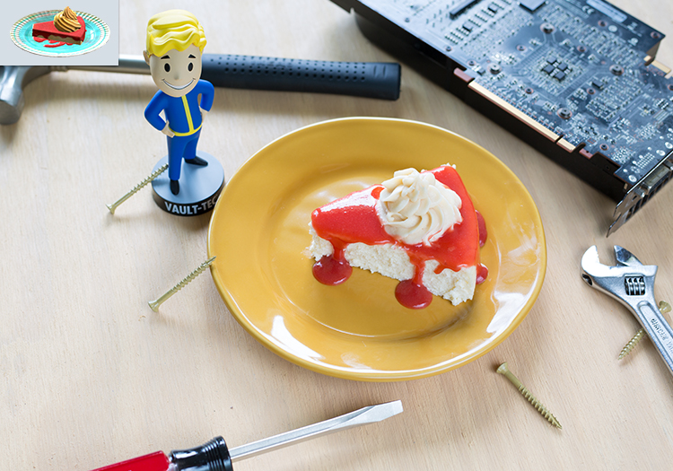

Perfectly Preserved Pie Recipe

Perfectly Preserved Pie
A piece of perfectly preserved pie.
Strange that of all things to survive the bombs, it would be a piece of pie.
Ingredients
- Filling
- 16 oz cream cheese, room temp
- 3 eggs
- 3/4 cups sugar
- 1/2 cup sour cream
- 2 tbps cornstarch
- 1 tbsp vanilla extract
- Strawberry sauce
Steps
- Preheat oven to 275F.
- In a bowl combine heavy cream with your cream cheese and vanilla extract.
- Add sugar and mix well.
- Next add your eggs, then the sour cream, salt, and cornstarch
- Pour batter in a cheesecake pan and bake for 1 hour.
- Top with strawberry sauce and a plume of whipped cream.
- let cool in the fridge for at least 2 hours.